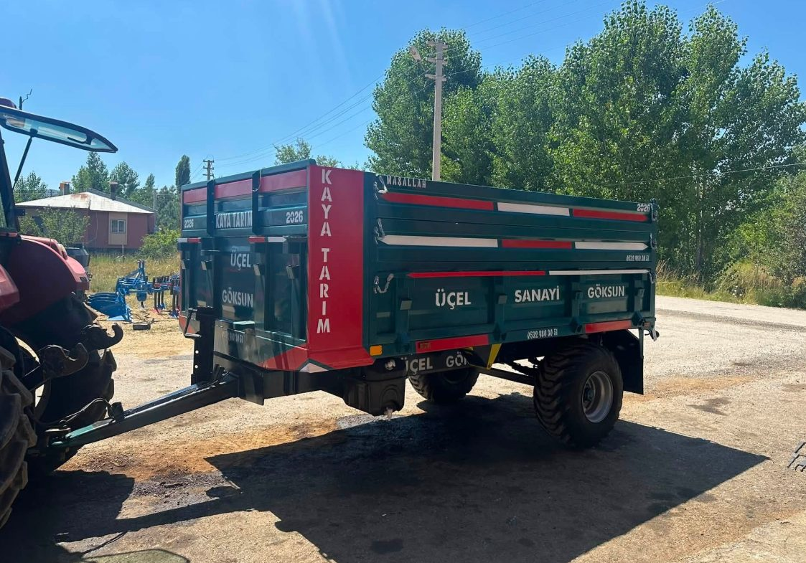
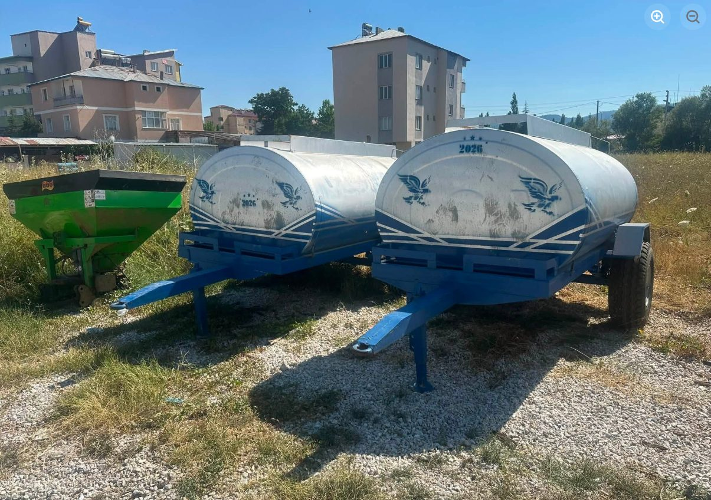

Römork
Tarladan harmana, gübreden hasada kadar taşıma işinizi kolaylaştıran, Göksun Sanayi Sitesi'ndeki atölyemizde imal ettiğimiz sağlam römorklar.
Ürün Kategorisi
Tarladan eve, depodan tarlaya yük, su ve malzeme taşıma-yükleme işlerinizi kolaylaştıran ekipmanlar.

Tarladan harmana, gübreden hasada kadar taşıma işinizi kolaylaştıran, Göksun Sanayi Sitesi'ndeki atölyemizde imal ettiğimiz sağlam römorklar.

Tarla sulamasından su taşımacılığına kadar geniş kullanım alanına sahip, dayanıklı su tankerlerimiz.

Traktörünüze monte edilen, yükleme-boşaltma işlerinizi kolaylaştıran kendi imalatımız ön yükleyici (loader) sistemleri.
Bu kategoride aradığınızı bulamadınız mı? 0532 480 30 51 numaralı hattımızdan sorun, birlikte bakalım.